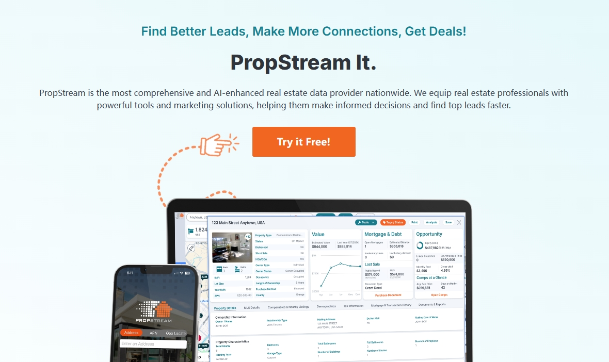
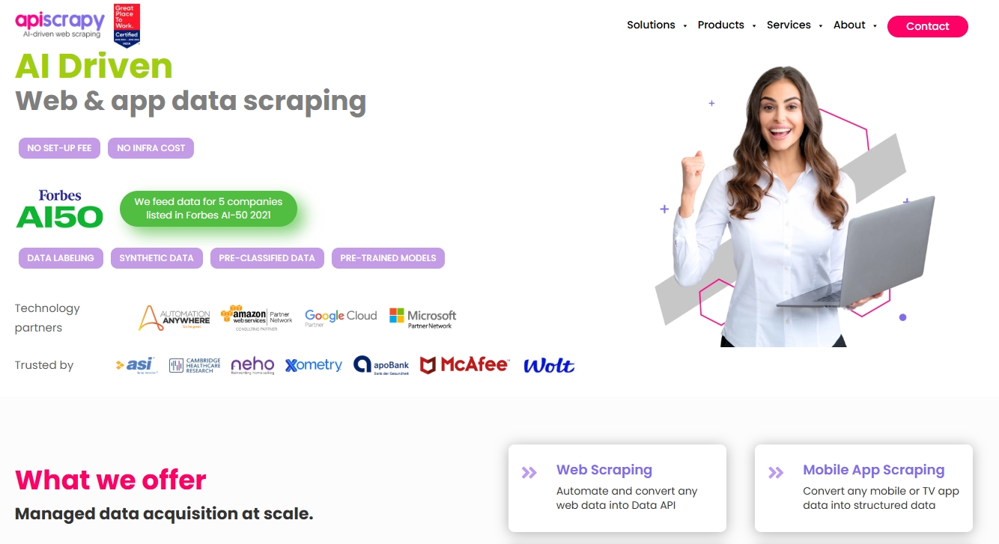
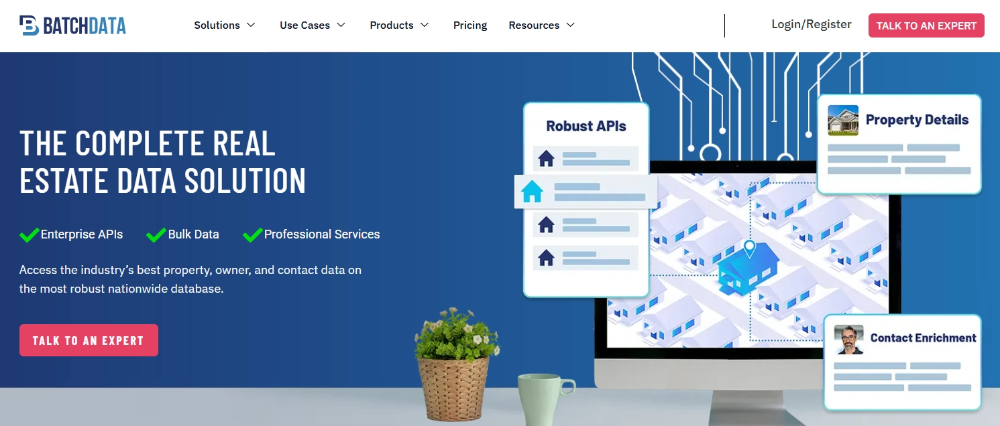
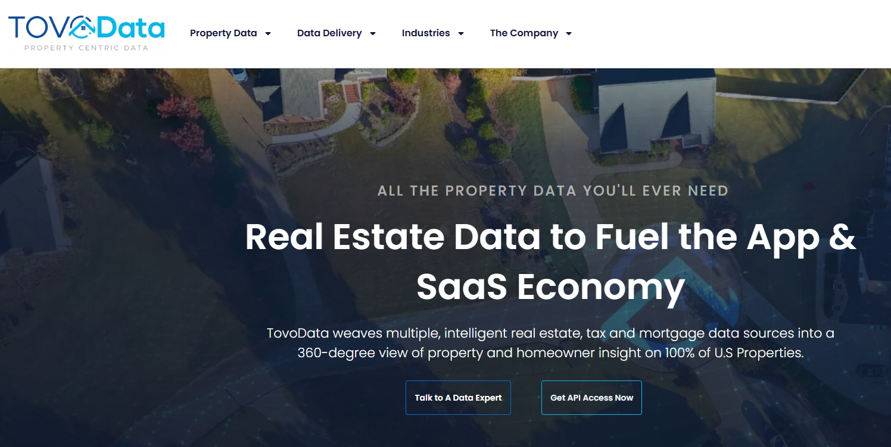
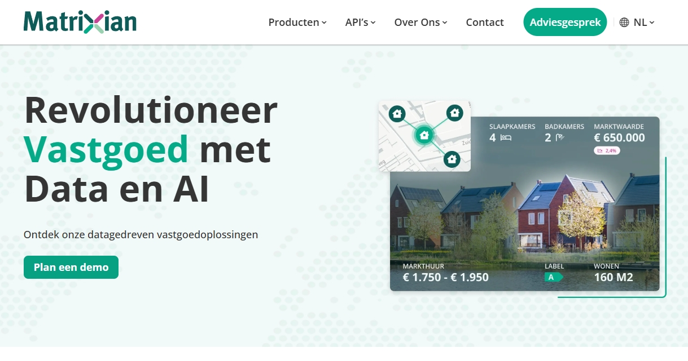
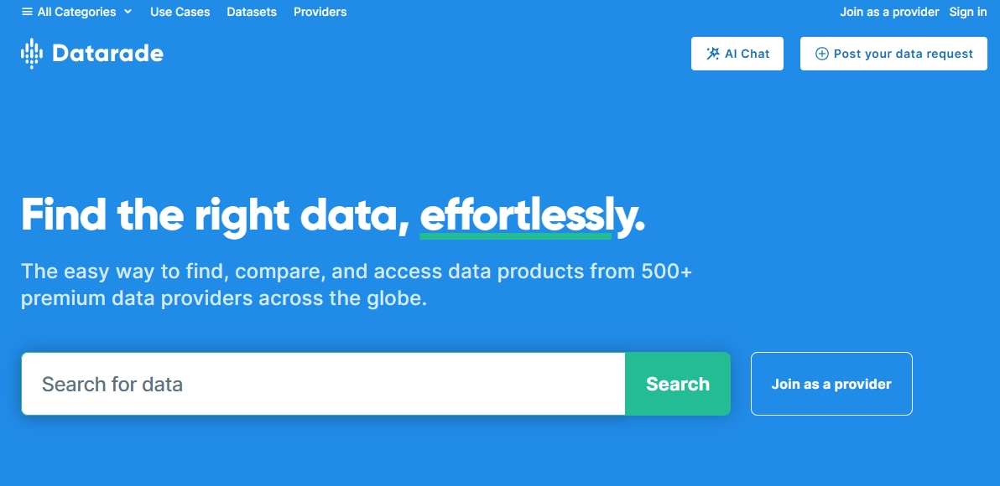
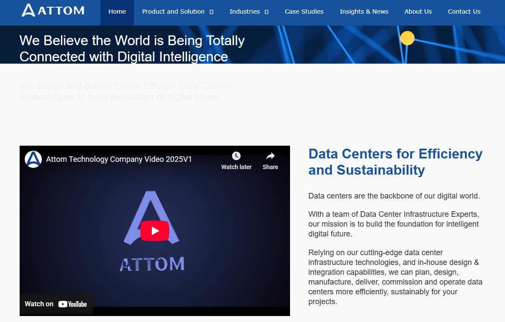
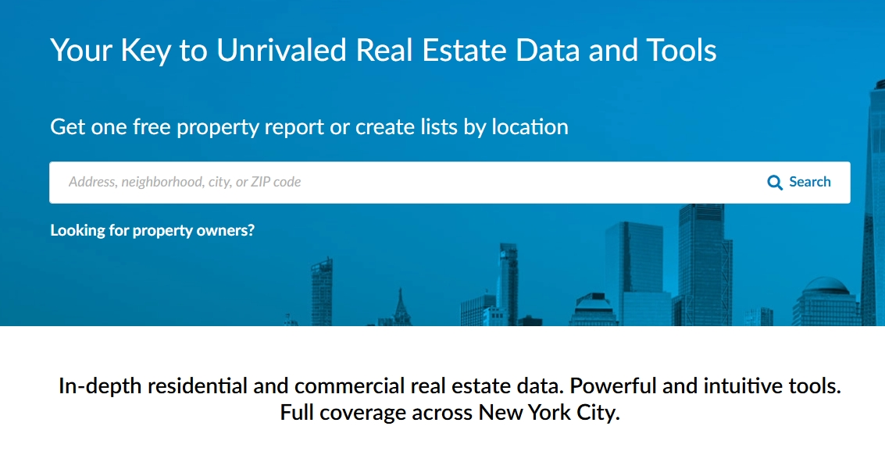
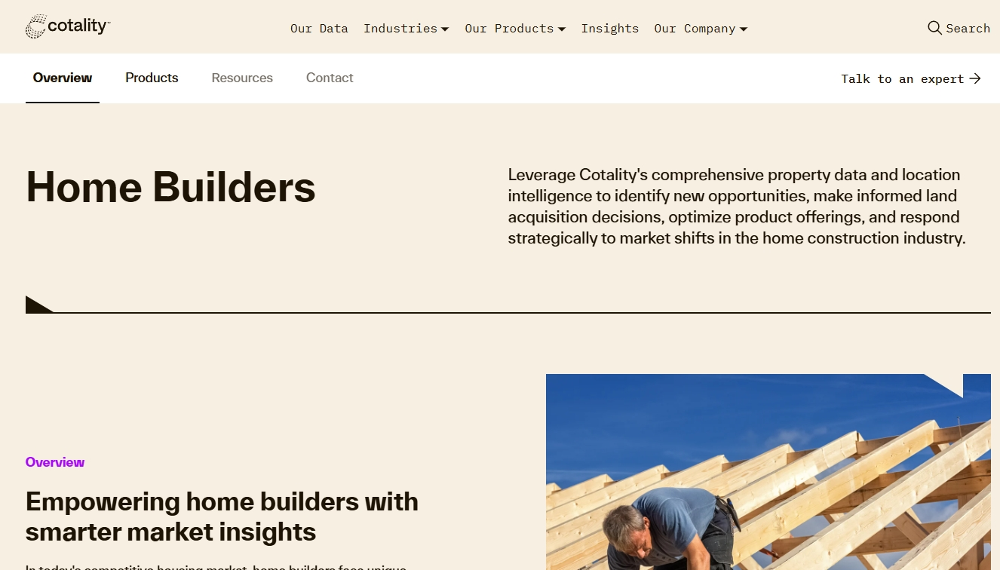

2025年12家頂級房地産數據提供商
探索最適合房地産AI模型的數據源，涵蓋房産所有權、抵押貸款記錄、市場趨勢和社區洞察。了解哪些平颱能爲預測建模、投資分析和房地産創新提供最精準、可擴展且即插即用的數據集。
房地産行業正在經曆由人工智能驅動的重要轉型。從自動化房産估值和預測性市場預測，到欺詐檢測和風險評分，AI模型正迅速成爲投資者、貸款機構、開髮商和房地産專業人士不可或缺的工具。然而，這些AI應用的有效性，在很大程度上取決於其所依賴數據源的質量和多樣性。
與傳統房地産分析依賴本地化記錄或碎片化掛牌信息不同，現代AI驅動的平颱需要大規模、結構化和精確的數據集。這些數據包括産權和地契記錄、抵押貸款表現、法拍數據、房産特徵、租賃和銷售趨勢、社區人口統計以及災害風險等。藉助正確的數據基礎，AI模型能夠以更高的精確度識別投資機會、提高估值準確性、簡化儘職調查流程，甚至預測未來的市場動向。
本指南探討了適用於房地産AI模型的最佳數據源，涵蓋了專注於房産情報、抵押貸款和交易數據、商業洞察乃至歐洲市場分析的各類提供商。無論您是在構建機器學習管道、開髮自動估值模型（AVM），還是進行全國性的投資研究，此處重點介紹的平颱都能提供可靠、可擴展且易於集成的數據集，爲房地産領域更智能的決策提供動力。
1. Bright Data Zillow Datasets

Bright Data Zillow數據集爲您提供美國最全麵的住宅房産掛牌信息和市場數據的結構化訪問渠道。該數據集覆蓋數百萬套住宅，包含掛牌價格、租金預估、物業特徵、曆史銷售記錄和社區趨勢等詳細信息。
通過即用型導出格式和API集成，開髮人員、分析師和投資者能夠利用高度細粒度和持續更新的數據訓練房地産AI模型。無論是用於自動估值、租金價格預測還是社區級趨勢分析，本數據集都能提供所需的規模精度。
功能特點
2. PropStream
PropStream將房産、産權和抵押貸款數據整合至統一平颱，專爲投資者、經紀人及分析師設計。該平颱覆蓋全美住宅與商業地産，提供深入的房産曆史、資産淨值、産權負擔及稅務數據洞察。
內置營銷和潛在客戶開髮工具可簡化推廣流程，集成分析功能支持估值建模、投資組合定位和風險評估。數據導出選項與API接口可實現與更廣泛AI驅動工作流的無縫集成。
功能特點
3. Immobiliare.it Insights

Immobiliare.it Insights提供專注於意大利及歐洲市場的深度房地産市場分析。該平颱聚合了房源數據、租賃趨勢、價格動態和買家需求信號，爲開髮商、投資者和貸款機構提供市場情報支持。
其可視化儀表闆和便於導出的報告使用戶能夠輕鬆監控市場波動並評估房産表現。該平颱對於針對歐洲房地産預測和需求預測的AI模型特別有價值。
功能特點
4. APISCRAPY
APISCRAPY提供即用型網絡爬蟲API服務，專爲快速可靠地提取大規模房地産數據集而設計。該平颱具備預建的房源信息、房産詳情和租賃市場數據連接器，能夠快速部署AI驅動的房地産研究與估值模型。
通過可定製的工作流程和結構化的JSON/CSV輸出，平颱可無縫集成到數據管道中，爲分析師、開髮人員和投資團隊提供自動化支持。
功能特點
5. BatchService
BatchService將房産、抵押貸款和産權數據集整合到統一平颱，專爲投資者和批髮商量身定製。該平颱提供跳過追踪、潛在客戶開髮和直接營銷工具，將房産洞察與可操作的推廣策略相連接。
其移動端和網頁應用使房産研究和潛在客戶管理可隨時隨地進行。BatchService通過數據與營銷工具的集成，簡化了從髮現到交易執行的全工作流程。
功能特點
6. Think Data Group

Think Data Group專注於精選房産數據集和數據增強服務，提供根據客戶使用場景定製的清潔可靠數據。其解決方案涵蓋産權、稅務、地契、法拍和人口統計疊加數據，爲房地産分析、估值和投資組合建模提供支持。
通過數據規範化和增強能力，Think Data Group確保多源數據的一緻性，使其成爲企業尋求高質量房地産AI繫統輸入的理想合作夥伴。
功能特點
7. TovoData
TovoData提供全國範圍的房産、抵押貸款和消費者數據集，專爲潛在客戶開髮、營銷和分析優化。其數據集包含業主檔案、資産淨值狀況、抵押貸款狀態和房産特徵，爲投資者和服務提供商提供可操作的洞察。
通過靈活的許可和交付選項（API、批量和雲端），TovoData可無縫集成到房地産AI管道中，支持從預測性營銷到自動估值等多種應用。
功能特點
8. Matrixian
Matrixian Group是AI驅動的房地産數據解決方案的領先提供商，提供自動估值模型和全麵的市場情報。其HomeMatrix平颱提供覆蓋歐洲市場的結構化房産數據，並通過持續更新確保數據準確性。
典型數據字段包括自動估值估算、房産特徵、曆史銷售數據、社區趨勢、能效評級和投資風險評分——非常適合構建估值模型和市場分析工具。該平颱通過AI分析將原始房産數據轉化爲可操作的洞察，對開髮精準的房地産模型具有重要價值。
功能特點
9. Datarade
Datarade是房地産AI領域的首選平颱，提供預製數據集和定製化數據採集解決方案。該平颱提供對全球數千個房地産數據源的結構化訪問，並通過自動化更新確保數據新鮮度。Datarade將原始房地産信息轉換爲CSV、JSON和API等即用型格式，支持定時交付或實時數據流。
典型數據字段包括房産特徵、交易曆史、分區數據、價格趨勢、社區人口統計和替代數據信號——非常適合訓練估值模型和預測分析。該平颱聚合和標準化全球異構房地産數據的能力，使其成爲構建綜合房地産AI繫統的寶貴資源。
功能特點
10. ATTOM
ATTOM構建了全麵的房産數據倉庫，覆蓋超過1.55億美國房産，包含産權、抵押貸款、稅務、地契、法拍和社區詳情等多層數據。其數據集爲各種房地産AI應用提供支持，從自動估值到風險評分和趨勢分析。
ATTOM雲端數據交付平颱確保快速、可擴展地訪問清潔規範化的數據集。通過靈活的API和批量交付選項，ATTOM幫助企業、投資者和金融科技平颱以最小集成摩擦利用房地産情報。
功能特點
11. PropertyShark
PropertyShark提供詳細的房産和所有權數據，在主要大都市區具有突出覆蓋優勢。其Mason平颱爲專業人士和投資者提供全麵的儘職調查、業主驗証、産權曆史記錄和可比交易分析工具。整合留置權、許可証和分區等詳細信息，簡化上市前研究和風險評估流程。
便捷的導出界麵和集成功能支持無縫分析師工作流，幫助核對不同來源的所有權或交易差異，爲複雜投資組合提供可靠的質控層。
功能特點
12. CoreLogic
CoreLogic是房地産情報和風險管理解決方案的領先提供商，覆蓋全美住宅和商業地産。其數據集涵蓋房産特徵、估值、抵押貸款表現、災害風險和社區人口統計，成爲貸款機構、建築商、保險公司和投資者信賴的數據源。
該平颱與分析和工作流工具的集成支持預測建模、欺詐檢測和市場預測。對於房地産AI應用而言，CoreLogic作爲基礎數據層，將房産詳細信息與經濟環境背景完美結合。
功能特點
總結
房地産行業向AI驅動決策的轉型揭示了一個簡單事實：數據質量是創新的基石。從産權驗証到全國抵押貸款洞察，再到超本地化市場趨勢，本指南中介紹的供應商提供了實現預測建模、投資情報和規模化風險評估所需的原材料。
通過利用這些專業供應商，組織能夠降低不確定性、提高估值準確性，並加速AI解決方案在房地産全價值鏈的部署。無論您的目標是髮掘高潛力投資機會、優化營銷活動，還是加強投資組合風險管理，選擇正確的數據源都將成爲戰略優勢。
在AI驅動房地産的時代，數據不再僅僅是輸入要素——它已成爲競爭優勢。與合適的平颱合作不僅能確保AI模型更加精確，還能更好地髮現傳統分析經常遺漏的深層洞察。藉助本指南中概述的資源，房地産專業人士可以 confidently 邁向數據和AI塑造每一個更智能決策的未來。
爲什麼高質量數據對房地産AI模型至關重要？
這項技術涉及從網站獲取數據並將其組織成結構化、易於使用的格式。因此，您可以將數據用於定製用途、市場研究、價格監控、房地産分析、潛在客戶開髮等。
哪些數據類型對房地産AI最具價值？
關鍵數據類型包括：産權記錄、抵押貸款表現、房産特徵、曆史交易記錄、租賃趨勢、社區人口統計數據，以及風險疊加數據（如災害或法拍數據）。
這些數據提供商能否與現有AI工作流集成？
可以。大多數領先提供商都提供即用型數據集、API接口和雲端交付選項，能夠輕鬆將其數據集成到機器學習管道和企業繫統中。